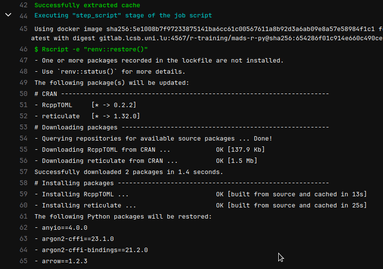
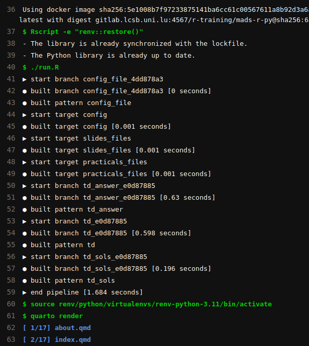

Aim
Synchronize both and packages between users and runners that actually render a teaching website using Quarto.
Introduction
{renv} is a package for managing packages at the project scale.

renv overview (Kevin Ushey)Python packages
This article is succinct but describes that {renv} can manage Python packages.
Setup
Initialization
Following instructions from the renv website. Using the virtual environment solution and not conda as the first one is included in python3.
You need to have installed:
- Python:
python3.11-venv - R:
{reticulate}{renv}
> renv::use_python()
Please select a version of Python to use with this project:
1: /usr/bin/python3
Selection: 1
- Selected "/usr/bin/python3" [Python 3.11.12].
- Creating virtual environment 'renv-python-3.11' ... Done!
- Updating Python packages ... Done!
- Lockfile written to "renv.lock".
- Activated Python 3.11.12 [virtualenv; ./renv/python/virtualenvs/renv-python-3.11]Installing Python packages
For example, installing pandas
> reticulate::py_install("pandas")
Using virtual environment '/xxxx/xxxx/renv/python/virtualenvs/renv-python-3.11' ...
+ /xxxx/xxxx/renv/python/virtualenvs/renv-python-3.10/bin/python -m pip install --upgrade --no-user pandas
Collecting pandas
Obtaining dependency information for pandas from https://files.pythonhosted.org/packages/fb/4f/4a4372b2e24439f559b73318683486831d75e59544ae02bf8dec8dd6f48b/pandas-2.1.0-cp310-cp310-manylinux_2_17_x86_64.manylinux2014_x86_64.whl.metadata
Downloading pandas-2.1.0-cp310-cp310-manylinux_2_17_x86_64.manylinux2014_x86_64.whl.metadata (18 kB)
Collecting numpy>=1.22.4 (from pandas)
Obtaining dependency information for numpy>=1.22.4 from https://files.pythonhosted.org/packages/9b/5a/f265a1ba3641d16b5480a217a6aed08cceef09cd173b568cd5351053472a/numpy-1.26.0-cp310-cp310-manylinux_2_17_x86_64.manylinux2014_x86_64.whl.metadata
Downloading numpy-1.26.0-cp310-cp310-manylinux_2_17_x86_64.manylinux2014_x86_64.whl.metadata (58 kB)
━━━━━━━━━━━━━━━━━━━━━━━━━━━━━━━━━━━━━━━━ 58.5/58.5 kB 4.0 MB/s eta 0:00:00
Collecting python-dateutil>=2.8.2 (from pandas)
Downloading python_dateutil-2.8.2-py2.py3-none-any.whl (247 kB)
━━━━━━━━━━━━━━━━━━━━━━━━━━━━━━━━━━━━━━━━ 247.7/247.7 kB 10.5 MB/s eta 0:00:00
Collecting pytz>=2020.1 (from pandas)
Obtaining dependency information for pytz>=2020.1 from https://files.pythonhosted.org/packages/32/4d/aaf7eff5deb402fd9a24a1449a8119f00d74ae9c2efa79f8ef9994261fc2/pytz-2023.3.post1-py2.py3-none-any.whl.metadata
Downloading pytz-2023.3.post1-py2.py3-none-any.whl.metadata (22 kB)
Collecting tzdata>=2022.1 (from pandas)
Downloading tzdata-2023.3-py2.py3-none-any.whl (341 kB)
━━━━━━━━━━━━━━━━━━━━━━━━━━━━━━━━━━━━━━━━ 341.8/341.8 kB 10.6 MB/s eta 0:00:00
Collecting six>=1.5 (from python-dateutil>=2.8.2->pandas)
Downloading six-1.16.0-py2.py3-none-any.whl (11 kB)
Downloading pandas-2.1.0-cp310-cp310-manylinux_2_17_x86_64.manylinux2014_x86_64.whl (12.7 MB)
━━━━━━━━━━━━━━━━━━━━━━━━━━━━━━━━━━━━━━━━ 12.7/12.7 MB 11.0 MB/s eta 0:00:00
Downloading numpy-1.26.0-cp310-cp310-manylinux_2_17_x86_64.manylinux2014_x86_64.whl (18.2 MB)
━━━━━━━━━━━━━━━━━━━━━━━━━━━━━━━━━━━━━━━━ 18.2/18.2 MB 10.9 MB/s eta 0:00:00
Downloading pytz-2023.3.post1-py2.py3-none-any.whl (502 kB)
━━━━━━━━━━━━━━━━━━━━━━━━━━━━━━━━━━━━━━━━ 502.5/502.5 kB 10.5 MB/s eta 0:00:00
Installing collected packages: pytz, tzdata, six, numpy, python-dateutil, pandas
Successfully installed numpy-1.26.0 pandas-2.1.0 python-dateutil-2.8.2 pytz-2023.3.post1 six-1.16.0 tzdata-2023.3Snapshot
Now, register with {renv} what we have just installed.
The main function renv::snapshot() will regiter both and packages.
> renv::snapshot()
The following package(s) will be updated in the lockfile:
# CRAN -----------------------------------------------------------------------
- renv [* -> 1.0.2]
Do you want to proceed? [Y/n]:
- Lockfile written to "/xxxx/xxxx/renv.lock".
The following will be written to requirements.txt:
- numpy==1.26.0
- pandas==2.1.0
- python-dateutil==2.8.2
- pytz==2023.3.post1
- six==1.16.0
- tzdata==2023.3
Do you want to proceed? [Y/n]:
- Wrote Python packages to "/xxxx/xxxx/requirements.txt".Checking on the written files, requirements.txt is a rather simple text file:
requirements.txt
renv.lock, the relevant part:
Quick test
.Rprofile
In theory, the sourced .Rprofile should only contains one necessary line generated by renv:
However, if you encountered issue with not finding the environment, it could be useful to have those env variables defined:
CI config
Now the Continuous Integration (CI) triggered by every commit needs to:
- Install the missing packages, especially the ones
- Cache them to avoid re-installing at each commit
- Run the pipeline of building the R code (using
{targets}(see previous post) - Render the website using quarto
Caching
The config is:
cache:
key: $CI_JOB_NAME
paths:
- _targets/
- _site/
- lectures_rendered/
- renv/python/virtualenvs/
- ${RENV_PATHS_CACHE}
- ${RENV_PATHS_LIBRARY}_targets/folder that contains the metadata and objects done by{targets}, necessary otherwise everything is redone each time._siteoutput folder of the website, default name by quarto.renv/python/virtualenvs/cache the python install + packages
Rest is classic and is described here
Building
before_script:
- Rscript -e "renv::restore()"
script:
- ./run.R
- source renv/python/virtualenvs/renv-python-3.11/bin/activate
- quarto render
tags:
- shared-cache
when: always./run.Rrunstargets::tar_make()- The key part is this
source [venv]line 5. It allows the next line with thequartocall to be aware of where is the install / packages 1. quarto renderthen build the website
Results
In this screenshot, you see the first time the CI sees the need to install packages for both languages

And now, after a successful caching, no install is required:

- line 40-59 is the
{targets}pipeline - line 61-63 the beginning of the quarto rendering process that involved Python code.